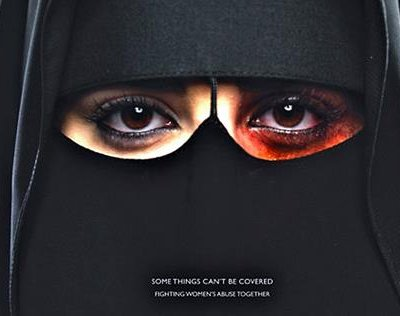

|
|
نخستین بار؛ آگهی درباره خشونت علیه زنان عربستان+عکس
دو شنبه9 اردیبهشت 1392

سایت پارسینه: خشونت علیه زنان در عربستان سعودی دست مایه یک آگهی شده است. در این تصویر صورت یک زن برقع پوش عربستان سعودی دیده می شود که یکی از دو چشم او که از پوشش برقع قابل رویت است، آثار ضرب و شتم دارد.
در زیر این اعلامیه نوشته شده است :" بعضی چیزها را نمی شود پوشاند. بیایید با هم خشونت علیه زنان را به مبارزه بطلبیم. "
این تصویر از سوی بنیاد خیریه " ملک خالد" و برای مبارزه علیه خشونت علیه زنان در عربستان توزیع شده است.
بنیاد خالد یک موسسه خیریه است که در سال 2001 از سوی فرزندان ملک خالد پادشاه اسبق عربستان (1982-1975) تاسیس شده است.
این نخستین بار است که یک نهاد وابسته به خاندان سلطنتی عربستان مساله خشونت علیه زنان را به عنوان یک معضل اجتماعی مورد توجه قرار می دهد و درباره آن آگهی توزیع می کند.